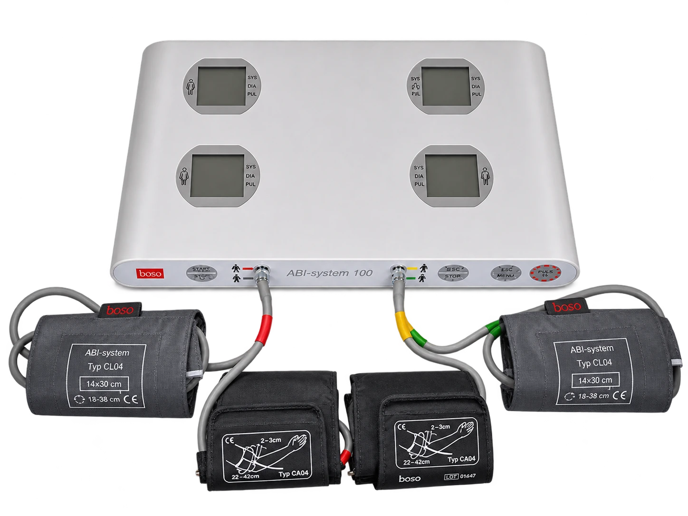

Кардиоваскулярная диагностика
Неинвазивная оценка артериального кровообращения и сердечно-сосудистых рисков на диагностической системе boso ABI-system 100.

Стоимость
- Диагностическое обследование
- —
- Артериальное давление
- 4 конечностиОдновременное измерение давления на обеих руках и лодыжках.
- Состояние артерий
- Лодыжечно-плечевой индекс (ЛПИ)Оценка признаков нарушения артериального кровоснабжения нижних конечностей.
- Асимметрия давления
- Правая и левая стороныСопоставление показателей давления на одноимённых конечностях.
- Продолжительность измерения
- 1 минутаАвтоматическое измерение и расчёт показателей; подготовка занимает дополнительное время.
Суть метода
Кардиоваскулярная диагностика — это обследование, при котором измеряют артериальное давление и пульс и оценивают, насколько хорошо кровь поступает по артериям к ногам.
Во время обследования вы лежите. Специалист надевает четыре манжеты: две на верхнюю часть рук, выше локтей, и две на лодыжки. Аппарат одновременно измеряет давление на руках и ногах. Само измерение занимает около минуты. Врач оценивает результаты и при необходимости рекомендует дополнительное обследование.
Для чего применяется
Раннее выявление сосудистых нарушений
Нарушение проходимости артерий нижних конечностей может длительное время протекать без явных симптомов. Сравнение давления на руках и лодыжках позволяет выявить признаки недостаточного артериального кровоснабжения и определить необходимость дальнейшего обследования.
Оценка сердечно-сосудистых рисков
Изменения лодыжечно-плечевого индекса могут быть связаны с атеросклеротическим поражением артерий и повышенным сердечно-сосудистым риском. Врач рассматривает результаты вместе с возрастом, анамнезом, уровнем артериального давления и другими клиническими данными.
Контроль артериального давления
Одновременная регистрация давления на четырёх конечностях позволяет сравнить показатели с правой и левой стороны. Выраженная или стойкая асимметрия может потребовать дополнительной оценки состояния артерий. Повышенное давление при одном измерении не является самостоятельным основанием для диагноза гипертонии.
Оценка кровоснабжения при жалобах и факторах риска
Исследование особенно актуально при регулярно возникающей боли в икроножных мышцах при ходьбе, исчезающей после остановки, а также у людей с повышенным риском атеросклероза, например при сахарном диабете и длительном стаже курения. Необходимость и объём обследования определяет врач.
Индивидуальный подбор восстановительной программы
Диагностические данные помогают врачу оценить исходные показатели кровообращения и давления при выборе физиотерапевтических и восстановительных процедур, а при необходимости — направить гостя на дополнительные исследования.
Предварительная оценка перед кислородными процедурами
Перед посещением барокамеры важно учитывать состояние сердечно-сосудистой системы, уровень артериального давления и имеющиеся противопоказания.
Кардиоваскулярная диагностика позволяет получить дополнительную информацию о состоянии артериального кровообращения, выявить признаки нарушения кровоснабжения конечностей и определить необходимость дальнейшего обследования.
Результаты помогают врачу оценить индивидуальные особенности организма при подборе восстановительных процедур и принять обоснованное решение о возможности их проведения. Исследование не является обязательным для каждого гостя и не заменяет врачебную оценку противопоказаний к барокамере.
Диагностические показатели
Артериальное давление
Система одновременно регистрирует систолическое (верхнее) и диастолическое (нижнее) давление на обеих руках и лодыжках. Это позволяет сопоставить значения в одинаковых условиях, не выполняя последовательные измерения на каждой конечности отдельно.
Лодыжечно-плечевой индекс (ЛПИ, ABI)
Лодыжечно-плечевой индекс (англ. Ankle-Brachial Index, ABI) — отношение систолического давления на лодыжке к систолическому давлению на плече. Система рассчитывает индекс отдельно для правой и левой ноги.
При затруднении прохождения крови по артериям давление на лодыжке может снижаться относительно давления на руке. Отклонения индекса помогают выявить признаки заболевания периферических артерий. Нормальный показатель не всегда исключает сосудистое заболевание, особенно при сахарном диабете или выраженной кальцификации артерий. При необходимости врач назначает дополнительные методы обследования.
Асимметрия артериального давления
Сравнение значений справа и слева позволяет выявить существенные различия между одноимёнными конечностями. Стойкая разница давления на руках может быть одним из признаков нарушения проходимости артерий верхних конечностей. Причина уточняется при дополнительном обследовании.
Пульсовое давление, частота и регулярность пульса
Пульсовое давление — разница между систолическим и диастолическим давлением. Система также регистрирует частоту пульса и может отмечать признаки нерегулярности пульсовых колебаний во время измерения. При подозрении на нарушения сердечного ритма врач может назначить электрокардиографию (ЭКГ).
Как проходит обследование
Гость располагается лёжа и отдыхает около пяти минут перед измерением. Специалист устанавливает четыре манжеты: две на верхней части рук, выше локтей, и две на лодыжках. Система автоматически и одновременно регистрирует давление и пульсовые колебания на всех четырёх конечностях.
Само измерение занимает около одной минуты. Программное обеспечение формирует отчёт с числовыми показателями, результатами сравнения и графиками пульсовых колебаний. Отклонения оценивает медицинский специалист.
Исследование не требует введения препаратов или нарушения целостности кожи.
Подготовка и ограничения
Для обследования рекомендуется свободная одежда, позволяющая открыть плечи и лодыжки. Перед измерением необходимо спокойно отдохнуть; во время работы аппарата не разговаривать и сохранять неподвижность.
Перед записью следует сообщить медицинскому специалисту о повреждениях кожи в местах наложения манжет, выраженной отёчности конечностей, недавних сосудистых вмешательствах, сердечно-сосудистых заболеваниях и беременности. Допустимость обследования определяется по состоянию гостя и инструкции конкретного аппарата.
При подозрении на острый тромбоз, внезапном выраженном отёке или боли в конечности необходима своевременная медицинская оценка, а не плановое обследование на ABI-system 100. При внезапной одышке или боли в груди необходима неотложная медицинская помощь.
Частые вопросы
Можно ли с помощью этого исследования определить, подходит ли мне барокамера?
Результаты дают врачу дополнительную информацию об артериальном давлении и кровоснабжении конечностей. Они могут быть полезны при предварительной оценке сердечно-сосудистого состояния, однако решение о проведении кислородной процедуры принимается с учётом всех противопоказаний и состояния здоровья гостя. Подробнее о барокамере.
Можно ли обнаружить закупорку сосудов или тромб?
Исследование может выявить признаки нарушения артериального кровоснабжения, в том числе при сужении артерий, но не показывает непосредственно место и причину сужения. Венозный тромбоз с помощью этого аппарата не диагностируется и не исключается. При соответствующем подозрении врач назначает ультразвуковое исследование сосудов и другие необходимые исследования.
Почему давление измеряется одновременно на руках и ногах?
Для сопоставления показателей с обеих сторон и расчёта лодыжечно-плечевого индекса отдельно для каждой ноги. Одновременное измерение уменьшает влияние колебаний давления во времени.
Если показатели в пределах нормы, можно ли считать сосуды здоровыми?
Нормальные показатели являются благоприятным результатом, но не исключают всех сосудистых заболеваний. При сохраняющихся жалобах или факторах риска врач может рекомендовать дополнительное обследование.
Заменяет ли исследование УЗИ сосудов или ЭКГ?
Нет. Система оценивает давление и пульсовые колебания; УЗИ сосудов позволяет исследовать их строение и кровоток, а ЭКГ — электрическую активность сердца. Эти методы решают разные диагностические задачи.
Научное обоснование
Лодыжечно-плечевой индекс — один из признанных методов первичной оценки заболевания артерий нижних конечностей. Он применяется совместно с клинической оценкой и при необходимости другими диагностическими методами.
Научные исследования и публикации
2024 — Европейское общество кардиологов (ESC)
Клинические рекомендации по заболеваниям периферических артерий и аорты рассматривают ЛПИ как один из доступных методов оценки артериального кровоснабжения и описывают показания к дополнительным исследованиям.
2024 — Американские кардиологические общества ACC/AHA
Рекомендации по заболеваниям артерий нижних конечностей определяют место ЛПИ в первичной диагностике и ограничения метода, в частности при сахарном диабете и хронической болезни почек.
2024 — Предварительная сердечно-сосудистая оценка перед гипербарической оксигенацией
Обзор The role of routine cardiac investigations before hyperbaric oxygen treatment подчёркивает роль анамнеза, клинической оценки и индивидуального подбора диагностических исследований перед кислородной терапией. Не устанавливает ЛПИ как обязательный тест перед барокамерой. Данные классической гипербарической терапии не следует автоматически переносить на режим 1,3 абсолютной атмосферы, используемый в клинике.
Документация производителя boso
Описание одновременного измерения давления на четырёх конечностях, расчёта ЛПИ, анализа пульса и дополнительной опции скорости пульсовой волны.